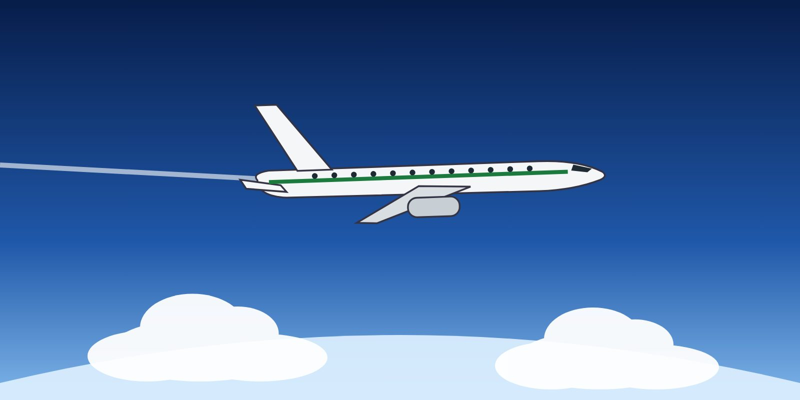

Explain the effects of Mach number and low air density on aircraft handling at high altitude.
Describe buffet boundaries, buffet margins and the coffin corner.
Recognise why recovery at high altitude needs a different approach from recovery at low altitude.

At high altitude, the margins are smaller and the air is thin.
Thin air and Mach effects
At high altitude the air is thin. To produce the required lift, the aircraft flies at a high true airspeed and a relatively high angle of attack. At the same time, the speed of sound is lower in colder air, so the aircraft operates close to its critical Mach number. Two important consequences follow:
The critical angle of attack decreases as Mach number increases. The aircraft can stall at a lower angle of attack — and a higher indicated speed — than at low altitude.
Engines produce much less excess thrust. There is little energy available to accelerate or climb.
Buffet boundaries and the coffin corner
At high altitude the margin between low-speed buffet and Mach buffet becomes small. Higher weight, turbulence or bank (more g) reduce it further.
Low-speed buffet is the onset of airflow separation as the stall approaches.
High-speed (Mach) buffet is caused by shock waves and flow separation as the aircraft approaches its maximum Mach.
As altitude and weight increase, the two boundaries come closer together. The point where they meet is often called the coffin corner.
Operators commonly plan cruise levels with a margin to buffet of at least 1.3 g — enough to absorb turbulence or a bank of about 40° without reaching buffet. The FMS "maximum altitude" usually includes such a margin. Flying above the optimum altitude reduces it.
Handling at high altitude
Aerodynamic damping is lower: the aircraft responds more slowly and oscillations take longer to settle.
Small pitch changes produce large vertical speeds because of the high true airspeed.
Control inputs should be smooth and small. Large, rapid inputs can quickly exceed the buffet margin.
Watch for temperature increases and wind shifts that suddenly reduce the Mach or speed margin.
Recovery at high altitude
Key principle
At high altitude, an aircraft at or near the stall cannot be "powered out" of it. The excess thrust is too small. The angle of attack must be reduced, and the aircraft must be allowed to lose altitude to regain speed and margin. Trading altitude for speed is the correct action.
Accept a significant altitude loss. Return to the cleared level only after the aircraft is under control and the speed is appropriate. Inform ATC as soon as possible.
Key takeaways
The critical angle of attack decreases as Mach increases — high-altitude stalls occur at lower angles.
Buffet boundaries converge with altitude and weight; keep at least the planned buffet margin.
Damping is low and vertical speed changes are large — use small, smooth inputs.
At high altitude, recover by reducing angle of attack and trading altitude for speed.
Knowledge check
At FL390 the aircraft approaches a stall. What is the most effective recovery action?
Apply maximum thrust and hold altitude
Reduce the angle of attack and accept an altitude loss to regain speed
Increase pitch to climb above the turbulence
Extend flaps to lower the stall speed
Answer: B. Excess thrust at high altitude is small. The angle of attack must be reduced, and altitude traded for speed.
Training material only. It does not replace the Aircraft Flight Manual, FCOM, QRH, MEL or the Domestic Airlines Operations Manual, which always take precedence.